Land Art and Women Land Artist
Land Art is an unconventional movement born in the 1960s in the USA as part of a wider interest in ecology and preservation of the environment. It is characterised by the choice of the artists to stop working inside the conventional museums and galleries and to leave the ‘white box’ to search more open and wider spaces. This developed in working in nature, often with natural materials taken from the sites because no gallery or museum could do what an open space was doing. They decided to use natural materials, and they didn’t want to make an industrial product that could be produced by factories and industrial systems in general. It is during the second wave of feminism that women attempted to participate in the male-dominated art world. The first display of Land Art in 1968, Earth Works, located at the Dwan Gallery in New York, featured only male artists. Land Art exhibitions in the following year also presented male-only shows. The disproportionate amount of information available regarding female and male artists is clear. The work made by men is discussed thematically, whereas women are discussed together in a small section, regardless of the genre of their work, accumulated only by their gender.
In this essay I want to illustrate my research on female land-artists categorising them not by their gender but by their work, the topic they explore and the medium they use.
The use of the body
Ana Mendieta
Siluetas
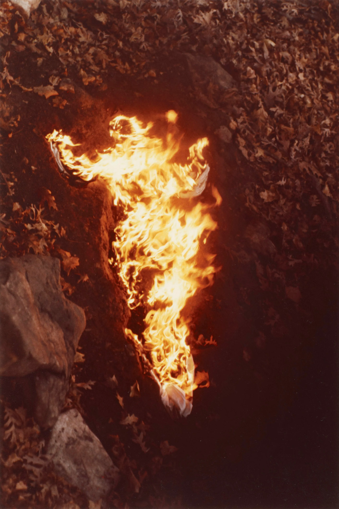
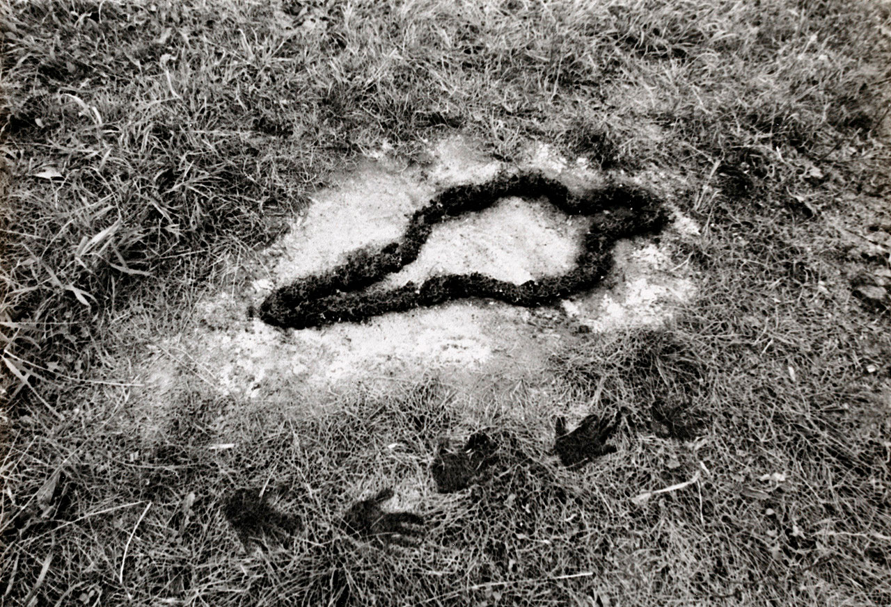
Cuban-born Ana Mendieta moved to the United States in 1961 at the age of 12, staying in refugee camps with her sister before relocating to Iowa. Mendieta’s father remained in Cuba as a political prisoner, and years of separation left the artist craving a deeper connection with the world around her. She created the Silueta (Silhouette)’ series that comprehends more than 200 works created between 1973 and 1980. These earth body works can be categorized as Land art, Body art and Performance art. During the performances she impressed her body in the landscape, in the ground, until she left her mark. The works were released by Mendieta naked and covered in feathers, blood, flowers, rocks and organic materials that embody Mendieta’s passion for religious rituals inspired by Cuban Catholicism, Santeria. The performances were often site specific (realised in Cuba, Mexico and Iowa) and always ephemeral; after carving her mark, she removed herself and left it there to be washed, burned, reintegrated or melted away, and became known throughout documentation and photographs. In her body of work, Mendieta addresses a wide range of issues surrounding sexuality, spirituality, cultural displacement, feminism and identity, and she also reveals her relationship to the Earth.
Untitled: Imagen de Yágul
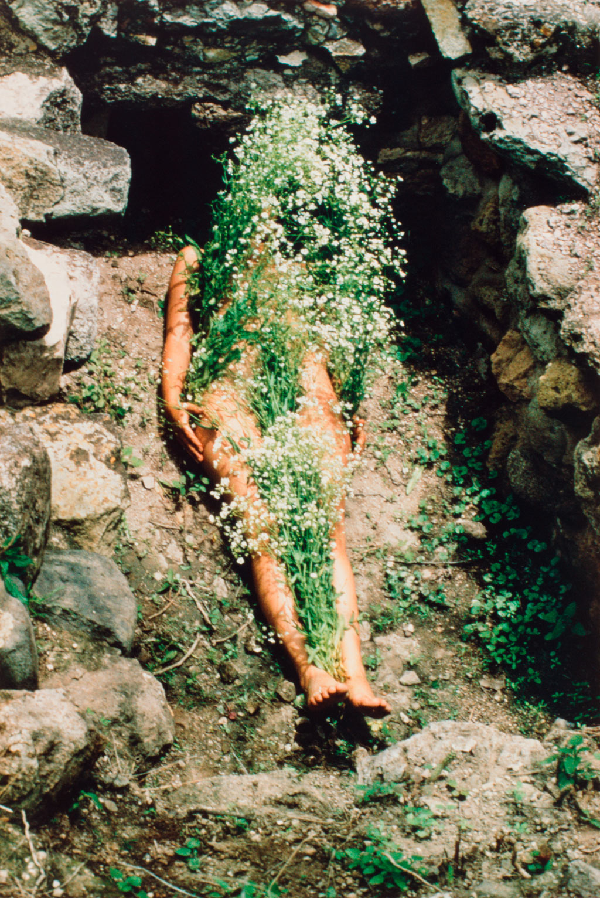
In her first piece, one of her best-known pieces, entitled Imagen de Yágul, the artist uncommonly remains in the resulting photograph lying in a Zapotec tomb, her nude body covered with white flowers almost looking like they are blooming from her body.
Untitled: Siluetas Series

Another performance from the series consisted in creating the outline of her body on the beach La Ventosa in Mexico. She then proceeded with filling the imprint with red tempera and left it to be washed away by the waves, until everything faded and nothing remained. The use of the body is a strong medium used to communicate, create,outrage and provoke. Another artist that really often uses her body to realise her works is Reina Galindo.
Regina José Galindo
Born in Guatemala City, Guatemala, in 1974, where she currently lives and works; her works universally explore social injustice, gender and race discrimination, and other abuses caused by unfair and power-dominated relationships in today’s society. Her works are strongly political and historical.
Tierra
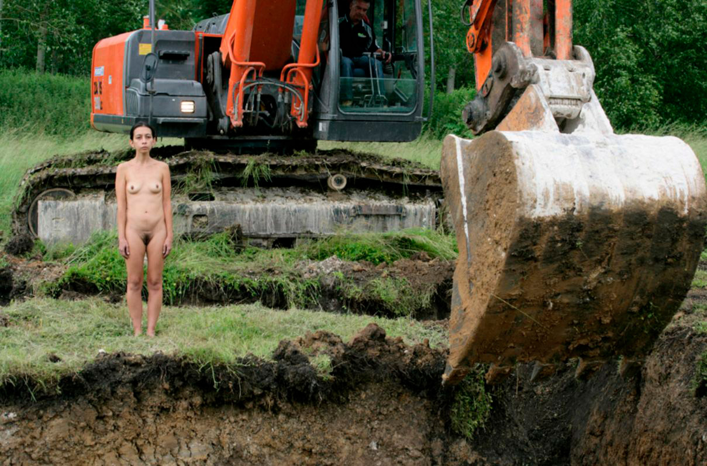
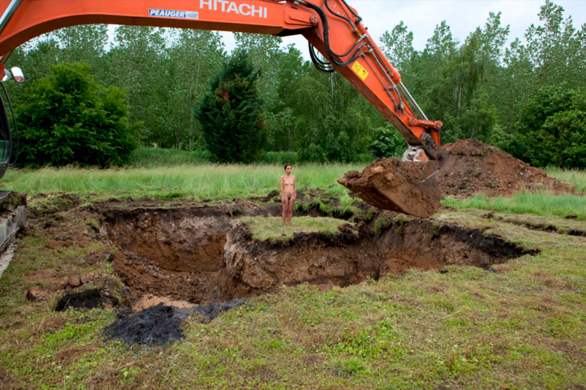
This works shows how the army tortured, killed and buried indigenous people and political opposers during the genocide enacted for thirty-six years in Guatemala that left more than 200,000 people dead. Indigenous people of Guatemala were considered by the army as internal enemies that sympathised with the Guerrillas, and they were therefore persecuted. The State put into practice the scorched earth strategy. This was a common and characteristic practice of the Guatemalan armed conflict. Troops of army soldiers burned everything, they raped, they tortured and they murdered. Many bodies were buried in mass graves that today make up part of the long list of evidence confirming the fact of the genocide.
Like in the series of Mendieta, Galindo retraces and witnesses a trauma. Compared to the series 'Silhouettes' by Mendieta, however, the role of the Earth is much less harmonious, and is made even more aggressive by the mechanical shovel that digs the pit around Galindo.
Mazorca
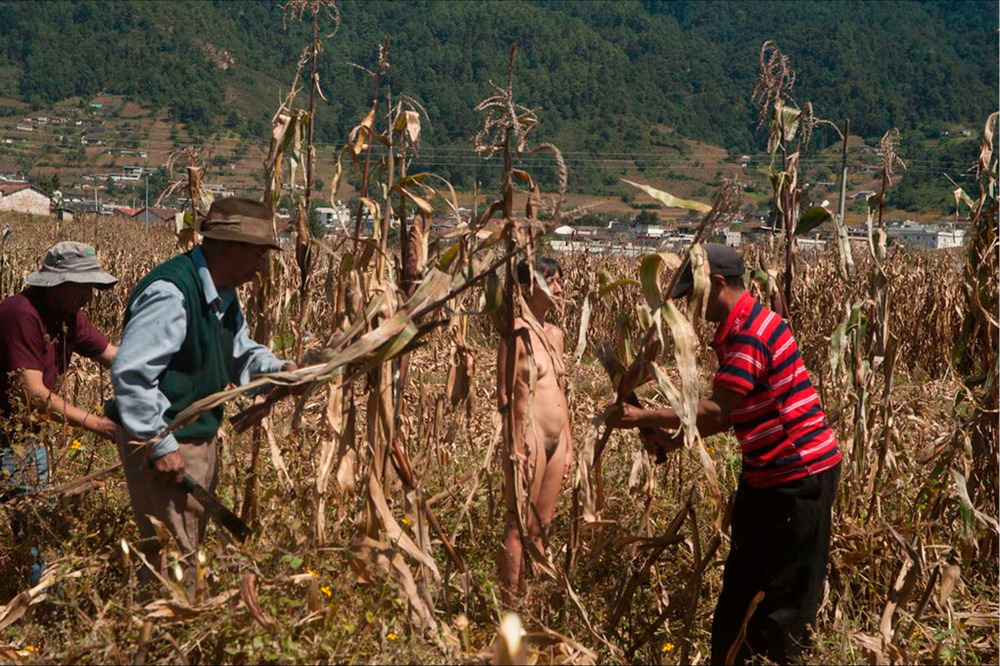
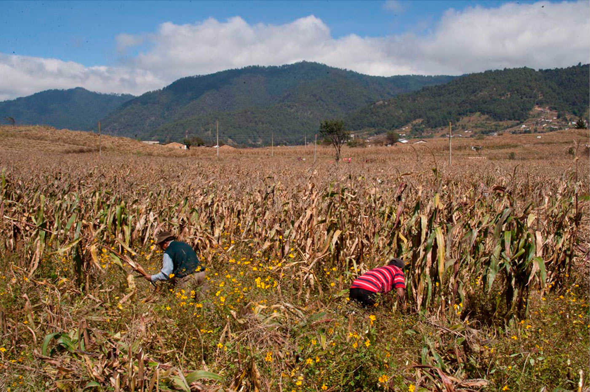
In this performance, released in 2014, Galindo, naked, remains still and hidden in a cornfield while four men with machetes cut down the corn stalks until she is discovered. During the war in Guatemala, as part of the military strategy, the corn was cut, it was burned, it was destroyed by the National Army with the intention to destroy indigenous communities that were considered guerrilla bases.
Political works
Agnes Denes
Wheatfield – A Confrontation
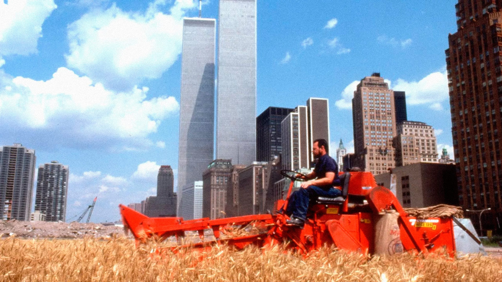
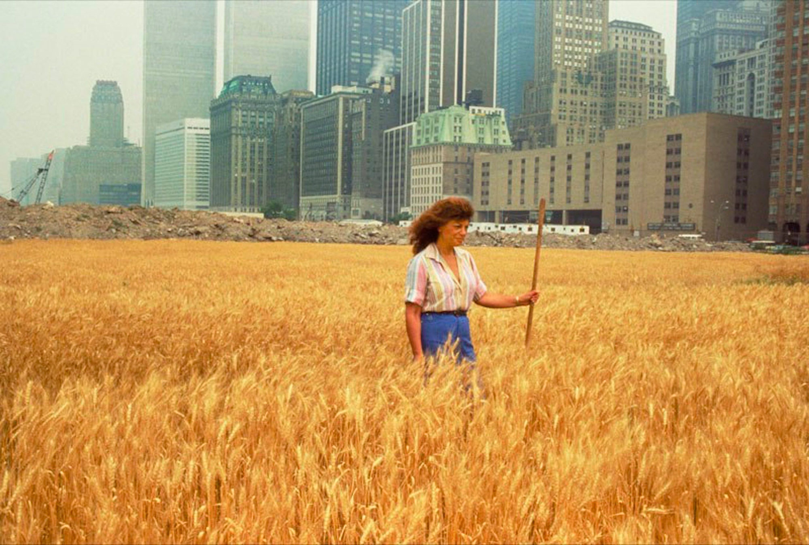
This is Denes’ most iconic and famous work. She realised it in 1982 in New York’s City Battery Park, where she planted and harvested a field of wheat on two acres. The location was really close to Wall Street and the World Trade Center, facing the Statue of Liberty. Upon this land, which was worth 4.5 billion dollars, and with the help of a $10,000 grant from the Public Art Fund, Denes and her volunteers ploughed the cluttered dirt and sowed the seeds by hand. They then harvested 1000 pounds of golden wheat on the 16th of August 1982. The wheat was then exhibited in The International Art Show to End World Hunger and travelled with the exhibition to 28 international cities. Visitors to the exhibition acquired the wheat seeds and planted them around the globe. This work created a powerful paradox. Wheatfield was a symbol, a universal concept; it represented food, energy, commerce, world trade, and economics. It referred to mismanagement, waste, world hunger and ecological concerns. It called attention to our misplaced priorities.
Zorka Ságlová
Homage to Gustav Obermann
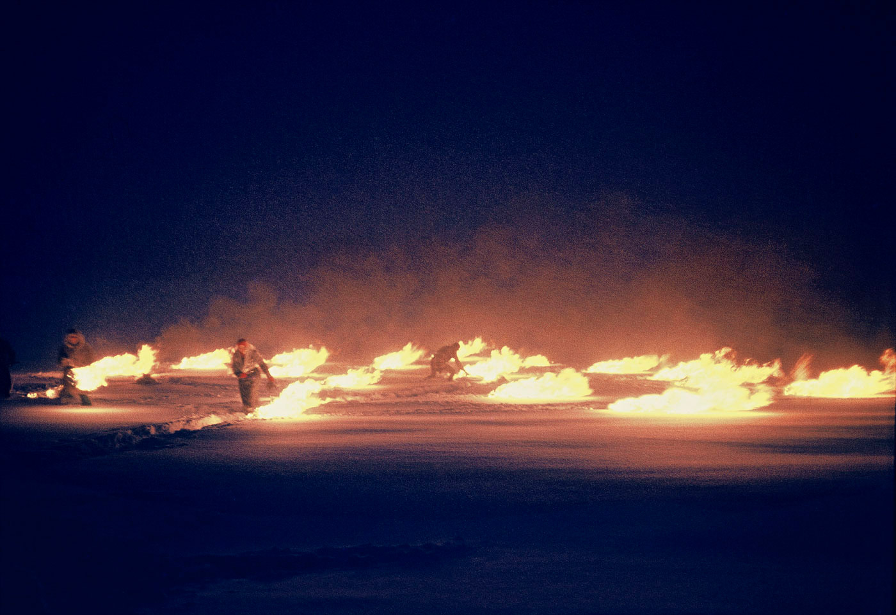
The outdoor action “Homage to Gustav Oberman“ was carried out in March 1970 and meant to be a tribute to the shoemaker Oberman from the city of Humpolec who used to walk about the surrounding hills at the beginning of the Second World War to personally protest against German occupation by spitting fire, and who it just so happens was also once arrested by the police. In the fields of Bransoudov outside of Humpolec, Zorka Ságlová and her friends arranged and incinerated a composition of approximately twenty piles of gasoline-soaked rags placed in the snowy landscape at night. This quiet land art project involved only very few of her friends and was intended to leave imprints in the deep snow. Besides the reference to Oberman, this area was also historically loaded with pagan myths told in the 13th century that also alluded to frequent fires on the surrounding hills. For Ságlová and her friends, the fires produced a highly aesthetic and romantic moment with their small craters successively appearing and deepening in the snow.
Laying Napkins Near Sudomer
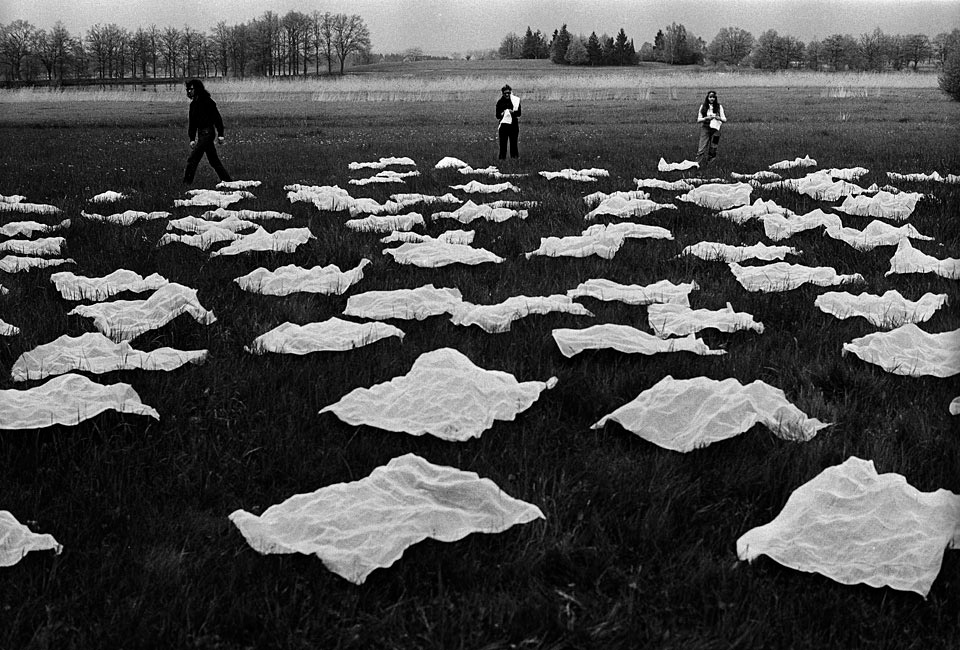
For Laying Napkins near Sudomer, the artist laid out approximately 700 napkins to form a triangle in a grass field near Sudomer, the site of a famous Hussite battle in 1420. The action referred to local folklore relating how Hussite women would spread pieces of cloth on a marshy field to snag the spurs of the Roman Catholic cavalrymen as they dismounted, making them easy targets for the Hussite warriors.
Landscapes modification
Agnes Denes
Tree Mountain – A Living Time Capsule
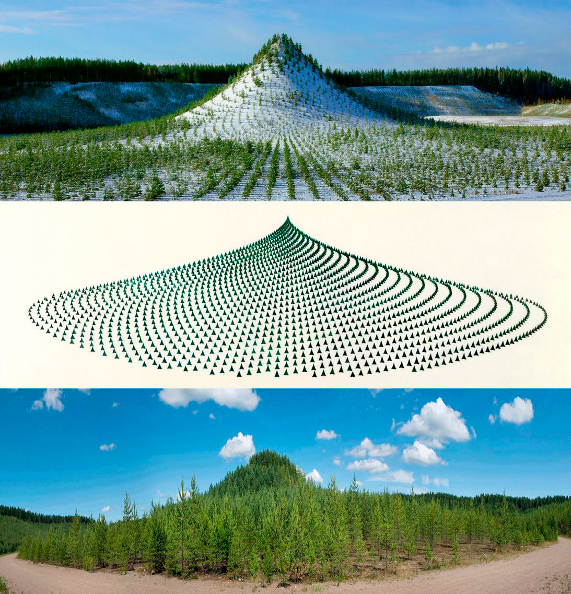
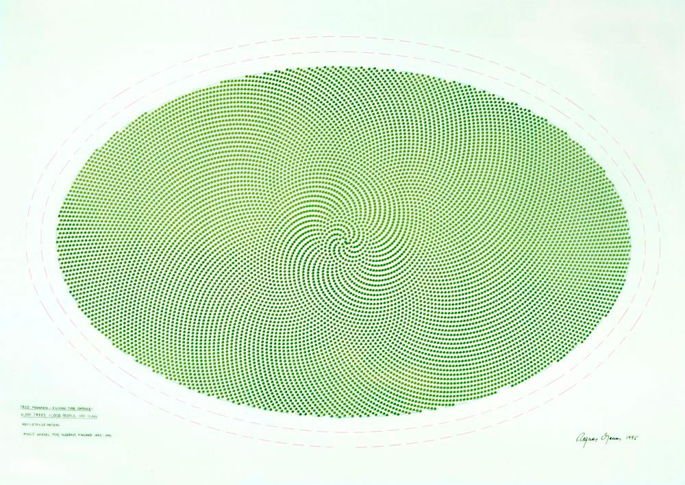
Located in Finland, more precisely at the Pinzio gravel pits near Ylöjärvi, this work is an environmental massive earthwork. For this piece, Denes planted a man-made virgin forest on a Finnish mountain composed of wasteland from a nearby gravel pit. She worked with 11,000 people to plant 11,000 fir trees following an intricate mathematical pattern derived from a combination of the golden section and the pineapple/sunflower system designed by the artist. She was able to secure protection for her project for 400 years, enough time for the forest to grow lush and self-contained. Each of the 11,000 people involved were issued a certificate declaring them custodian of one tree. This is the very first time in Finland and among the first ones in the world when an artist restores environmental damage with ecological art planned for this and future generations. It is an act of eco-safeguarding for continual generations. The main idea was to landscape a former gravel pit, but Tree Mountain also contributes to the formation of clean groundwater.
Maya Lin
Storm King Wavefield
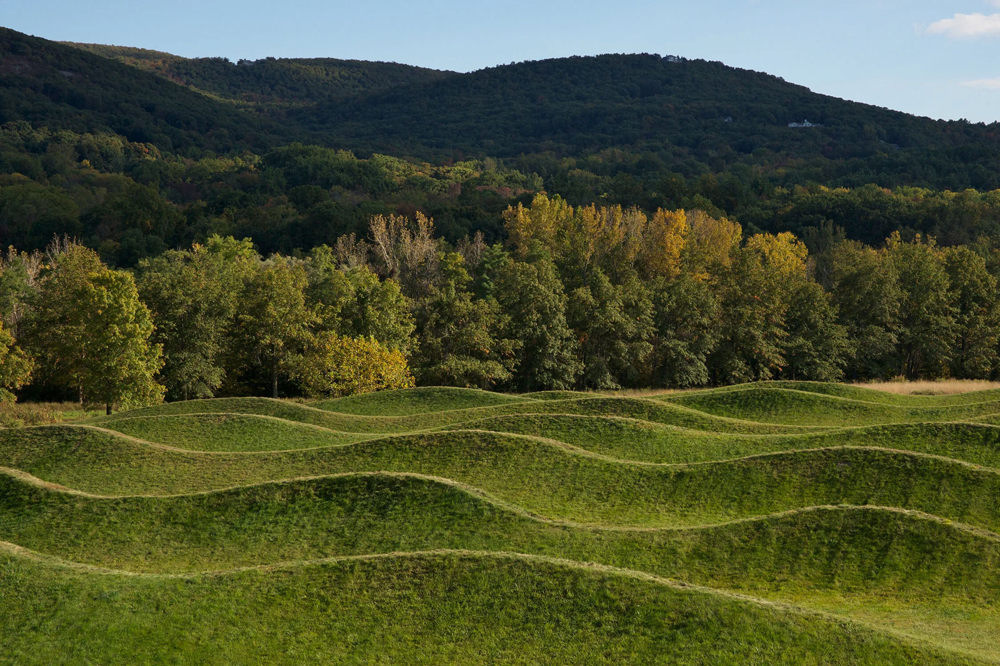
Storm King Wavefield covers an area of approximately four acres and consists of seven rows of undulating waves shaped from earth and covered with grass. The waves range from 3 to 4.5 metres (10–15 feet) in height, while the distance between each depression is approximately 12 metres (40 feet). The work is a site-specific installation dedicated to the study of forms generated by water waves, translated into a large-scale Land Art intervention. Because the dimensions of the installation correspond to those of actual ocean waves, visitors experience a perception similar to that of being in the open sea, losing visual contact with the surrounding waves as they move through the landscape. Through this transformation of the terrain, Maya Lin makes natural phenomena normally associated with water visible and tangible, inviting the public to reflect on the relationship between perception, nature, and space.
Bibliography
- Denes, Agnes. Agnes Denes. Agnes Denes Studio.
- Exhibition: ‘Ends of the Earth: Land Art to 1974’ at Haus der Kunst, Munich. Art Blart: Art and Cultural Memory Archive, 9 Jan. 2013.
- Land Art. Kate Chesters Art.
- Galindo, Regina José. Regina José Galindo. Regina José Galindo.
- This Artwork Changed My Life: Ana Mendieta’s “Silueta” Series. Artsy.
- Tree Mountain. Visit Finland.